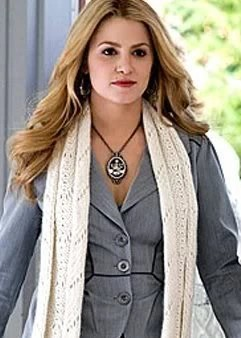
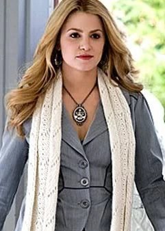

key traits:"Statuesque," with "golden [hair], gently waving to the middle of her back."
Born 1915
From Rochester New York
Height-5'9
Changed at 18 in April 1933
Special Ability- Enhanced Beauty
Leave Out All The Rest by Linkin Park
Rosalie Hale was born in Rochester, New York, in early 1915; she had two younger brothers, a housewife for a mother, and her father worked at a bank. Her father's job helped keep the family wealthy during the Great Depression. She was born beautiful and constantly praised, making her vain and self-centered as a result. Her parents took pride in her looks, which she enjoyed. She also enjoyed her father's pleasure in buying her beautiful clothes, her girlfriends' envy, and the admiration of every man she met. The result of all this attention was that Rosalie tended to be self-absorbed, shallow, and materialistic. However, unlike her social-climbing parents, who always wanted more out of life despite their already elevated status, Rosalie was just happy in the knowledge that she was Rosalie Hale, and that she was very beautiful. She was, however, bothered by the superior beauty of the members of the Cullen family: Carlisle, Esme, and Edward, but because she hardly saw them, she did not let that get the better of her.
One day, Rosalie's mother had her dress up to deliver her father's forgotten lunch to his job, in the hopes that the son of the bank owner would take notice of Rosalie, and it worked. Royce King II sent roses to Rosalie and, after making a comment that her eyes were like violets, Rosalie began receiving them, too. Their relationship was solely based on physical attraction, as Royce was often too busy at the bank, and they could never truly get to know one another. Despite this, they became engaged. One week before the wedding, Rosalie visited her good friend Vera, whom Rosalie envied for her baby boy. At one point, Vera's husband kissed her, and Rosalie finally noticed the lack of love in her relationship with Royce that was so obvious in Vera's. While walking home, shaken by her thoughts about her loveless relationship, Rosalie stumbled across her drunken fiancé and his equally drunk friends. Royce bragged about his fiancée's beauty which eventually led to Rosalie being brutally gang-raped and beaten before being left in the street to die.
Rosalie was found by Carlisle, the scent of blood having attracted him to the dying girl. He carried her to a room where he turned her into a vampire, worsening the pain she was already in. She awoke to the voices of the Cullens arguing with Carlisle about him saving Rosalie. Edward was unhappy with the idea that Carlisle had changed her in the hopes that she could be his mate: Rosalie was furious at Edward's rejection, even despite her own lack of feelings for him as well. Her vanity still needed feeding and she was surprised and hurt that Edward wasn't attracted to her. Upon seeing her reflection, Rosalie's unhappy mood increased with her now improved vampiric beauty, because it meant she was no longer human. Rosalie soon avenged her death by killing Royce's friends one at a time. Having saved Royce for last, Rosalie donned a bridal gown for dramatic effect and found him locked in a windowless room with a thick, vault-like door guarded by two men. Killing the guards, Rosalie entered the room where she tortured Royce to death. Though she killed seven men, she was very careful to not spill even the smallest drop of their blood, knowing that she wouldn't be able to resist and repulsed by the idea of having any part of them inside her. After her revenge, Rosalie begrudgingly joined the Cullen family. Carlisle had intended for Edward and Rosalie to be like he and Esme were, but Edward only loved Rosalie as a sister.
Two years after her transformation, in 1935, Rosalie stumbled across a young man named Emmett McCarty being mauled by a bear outside of Gatlinburg, Tennessee. Emmett's features reminded her of Vera's young son Henry, and, because of this, Rosalie chose to rescue the dying man. Rosalie resisted the urge to drink Emmett's blood and carried him over one hundred miles to Carlisle, who then turned him into a vampire at her request. It was through this experience that she and Edward connected as siblings. Emmett accepted his new status quite well and became Rosalie's mate. They rarely separated after this; the two having found in the other their true soul mate. Edward had once told Bella that they were always together, and it was hard to be in a five-mile radius of them. The pair would marry often and sometimes lived separately from the rest of their adopted family so as to live as a newlywed couple. In 1937, while living in Forks, they were discovered by Ephraim Black's pack of shape-shifters. To secure both sides, the Cullens and the pack made a treaty: they shall not attack or expose the Cullens unless they bite a human or cross over to the Quileute traditional lands. They moved away sometime after the agreement was made.
By 1950, the family welcomed two new additions, Alice Cullen and Jasper Hale. Due to their similar features, Rosalie and Jasper would often play the role of biological siblings, even twins. During the long decades of her life, Rosalie developed a passion for collecting cars akin to her adopted brother Edward and is a brilliant mechanic. She has attended several high schools and universities, and earned degrees in electrical engineering, business, and astrophysics, and has also studied medicine to help Carlisle keep up-to-date with the latest advances.
 
